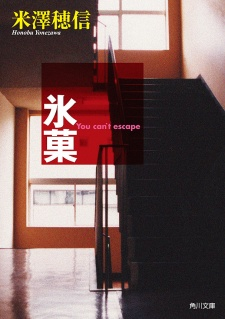

Hyouka, or Koten-bu, is a story about highschool students within a club known as the "Classics Club." Being an introspective on the students themselves, they solve mysteries ranging from a parents' last words to what happened at the end of a fair. Ultimately, it can be consumed in multiple mediums, as a show--Hyouka--or as a book--Koten-bu. Both experiences are well worth indulging in.
